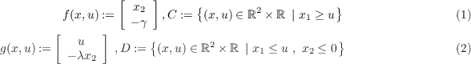

The examples below illustrate the use of the Simulink implementation above.
Example 1.3 (bouncing ball with input) For the simulation of the bouncing ball system with a constant
input and regular data given by

where
γ > 0 is the gravity constant,
u is the input constant, and
λ ∈ [0
,1) is the restitution coefficient. The
MATLAB scripts in each of the function blocks of the implementation above are given as follows. An input was
chosen to be
u(
t,j) = 0
.2 for all (
t,j). The constants for the bouncing ball system are
γ = 9
.81 and
λ = 0
.8.
The following procedure is used to simulate this example with HyEQsimulator.mdl:
- HyEQsimulator.mdl is opened in MATLAB/Simulink.
- The Embedded MATLAB function blocks f, C, g, D are edited by double-clicking on the block and
editing the script. In each embedded function block, parameters must be added as inputs and defined
as parameters by selecting Tools>Edit Data/Ports, and setting the scope to Parameter. For this
example, gamma and lambda are defined in this way.
- The initialization script initialization.m is edited by opening the file and editing the script. The
flow time and jump horizons, T and J are defined as well as the initial conditions for the state vector,
x0, and input vector, u0, and a rule for jumps, rule.
- The postprocessing script postprocessing.m is edited by opening the file and editing the script. Flows
and jumps may be plotted by calling the functions plotflows and plotjumps, respectively. The hybrid
arc may be plotted by calling the function plotHybridArc.
- The simulation stop time and other simulation parameters are set to the values defined in
initialization.m by selecting Simulation>Configuration Parameters>Solver and inputting T,
RelTol, MaxStep, etc..
- The masked integrator system is double-clicked and the simulation horizons and initial conditions are
set as desired.
- The block labeled Double Click to Initialize is double-clicked to initialize variables.
- The simulation is run by clicking the run button or selecting Simulation>Start.
- The block labeled Double Click to Plot Solutions is double-clicked to plot the desired solutions.
1 function xdot = f(x, u, gamma)
2 % state
3 x1 = x(1);
4 x2 = x(2);
5 % flow map: xdot=f(x,u);
6 xdot = [x(2); gamma];
1 function v = C(x, u)
2 % flow set
3 if (x(1) >= u(1)) % flow condition
4 v = 1; % report flow
5 else
6 v = 0; % do not report flow
7 end
1 function xplus = g(x, u, lambda)
2 % jump map
3 xplus = [u(1); -lambda⋆x(2)];
1 function v = D(x, u)
2 % jump set
3 if (x(1) <= u(1)) && (x(2) <= 0) % jump condition
4 v = 1; % report jump
5 else
6 v = 0; % do not report jump
7 end
A solution to the bouncing ball system from x(0,0) = [1,0]⊤ and with T = 10,J = 20, rule = 1, is depicted in
Figure 1(a) (height) and Figure 1(b) (velocity). Both the projection onto t and j are shown. Figure 2 depicts the
corresponding hybrid arc for the position state.
These simulations reflect the expected behavior of the bouncing ball model. Note the only difference between this
example and the example of a bouncing ball without a constant input is that, in this example, the ball
bounces on a platform at a height of the chosen input value 0.2 rather than the ground at a value of
0.
For MATLAB/Simulink files of this example, see Examples/Example_1.3.
_